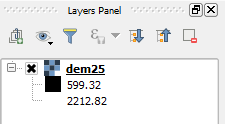

This lesson's project contains one layer named dem25.

The dem25 layer is an extract of a Digital Elevation Model, with elevation values in meters that range from 599 m to 2212 m.
By default, raster layers with only one band are styled using gray scale values from black (minimum value) to white (maximum value). But there are more colorful options.
In the Layers Panel, click the DEM25 layer to make it the current active layer. The layer's name will be highlighted.